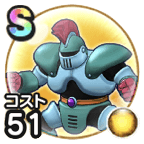

よろいのきし
4章1話〜4章7話マホトーンこころ最大コスト+4スキルの体技ダメージ+7%ドラゴン系へのダメージ+7%混乱耐性+7%即死耐性+7% / 7.0点
くわしい特徴
【ランク特殊効果】 マホトーンよろいタックルこころ最大コスト+4スキルの体技ダメージ+7%ドラゴン系へのダメージ+7%鳥系へのダメージ+7%混乱耐性+7%即死耐性+7%転び成功率+30%マホトーンこころ最大コスト+4スキルの体技ダメージ+7%ドラゴン系へのダメージ+7%混乱耐性+7%即死耐性+7%

4章1話〜4章7話マホトーンこころ最大コスト+4スキルの体技ダメージ+7%ドラゴン系へのダメージ+7%混乱耐性+7%即死耐性+7% / 7.0点
【ランク特殊効果】 マホトーンよろいタックルこころ最大コスト+4スキルの体技ダメージ+7%ドラゴン系へのダメージ+7%鳥系へのダメージ+7%混乱耐性+7%即死耐性+7%転び成功率+30%マホトーンこころ最大コスト+4スキルの体技ダメージ+7%ドラゴン系へのダメージ+7%混乱耐性+7%即死耐性+7%